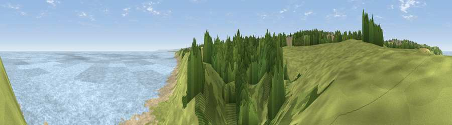

Viewpoint near Horden
#9510 in England · top 21% of its area beats it · near HordenThe view, rendered

A 360° render of this exact spot computed from the terrain model, tree cover and land cover — summer colours, afternoon light, calibrated against photographs of famous viewpoints. Real trees, hedges and buildings will differ in detail.
The panorama
Grey silhouette: terrain skyline in each direction (720 bearings, Earth curvature and refraction included). Dashed green: skyline with trees (+15 m) and buildings (+8 m) as obstacles. Blue strip: how far the ground is visible on each bearing.
Where the view opens
Wedge length = distance to the farthest visible ground on that bearing (vegetation-aware). Rings at 10, 25 and 50 km.
What fills the view
38% water · 24% woodland · 23% grassland · 12% bare ground · 2% built-up ·
Angular shares of the visible panorama (visual magnitude), not map area. Landscape diversity 0.61 (0–1 Shannon).
Key numbers
More beautiful places nearby
The staircase of upgrades: each row has a higher view potential than everything closer. Driving times are estimates from straight-line distance, calibrated against real road routing — check an actual route before setting out.
| Place | Direction | Drive | Score |
|---|---|---|---|
| Viewpoint near Easington Colliery | NW · 2 km | ~6 min | 69.4 |
| Viewpoint near Easington Colliery | NNW · 4 km | ~9 min | 74.4 |
| Viewpoint near Houghton-le-Spring | NW · 11 km | ~22 min | 76.0 |
| Viewpoint near Lazenby | SSE · 26 km | ~42 min | 86.4 |
| Warsett Hill | SE · 32 km | ~49 min | 86.8 |
| Viewpoint near Easington | SE · 37 km | ~55 min | 90.2 |
| The Knoll | SSW · 463 km | ~430 min | 91.0 |
54.76890, -1.30402 · source: screening · position refined by local search. Computed location — check access rights before visiting.